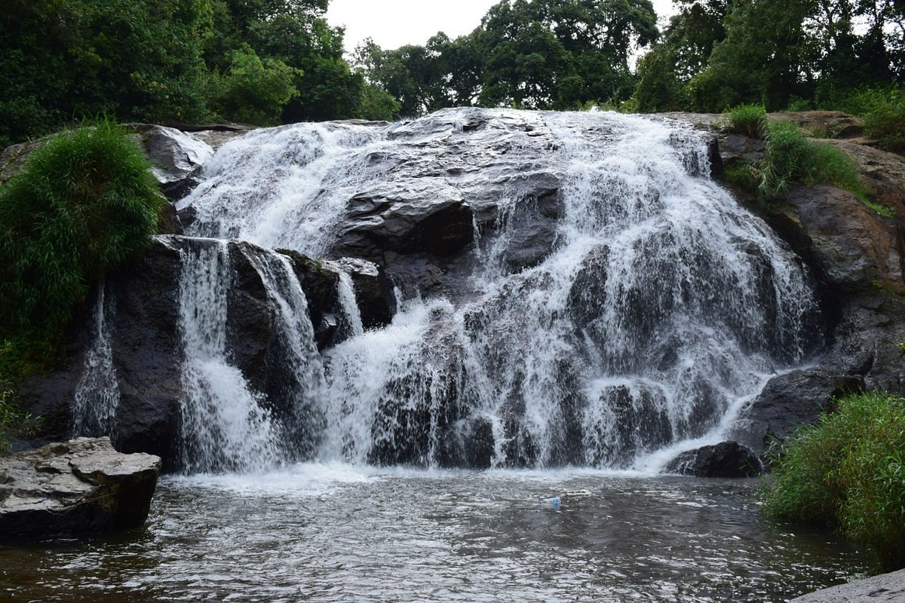
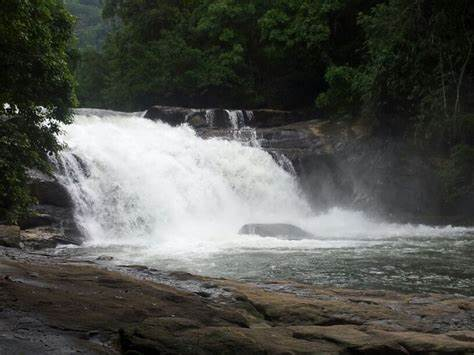

Nature lovers
Waterfalls
A waterfall is a point in a river or stream where water flows over a vertical drop or a series of steep drops. Waterfalls also occur where meltwater drops over the edge of a tabular iceberg or ice shelf. Waterfalls can be formed in several ways, but the most common method of formation is that a river courses over a top layer of resistant bedrock before falling on to softer rock, which erodes faster, leading to an increasingly high fall. Waterfalls have been studied for their impact on species living in and around them.

Catherine Water Falls view pointCatherine Falls is a double-cascaded waterfall located in Kotagiri, The Nilgiris District, in the Indian state of Tamil Nadu. It is a major tourist spot, located on the Mettupalayam road branching off at Aravenu. The upper fall drops to the floor, and is the second-highest in the Nilgiri Mountains. The waters from the upper stream of the Kallar River are crossed by the Mettupalayam-Ooty road beyond the mountains in the southwest. The combined height of both falls is about 76 metres (250 ft).
|

Athirapally WaterfallAthirappilly Falls, is situated in Athirappilly Panchayat in Chalakudy Taluk of Thrissur District in Kerala, India on the Chalakudy River, which originates from the upper reaches of the Western Ghats at the entrance to the Sholayar ranges. It is the largest waterfall in Kerala, which stands tall at 81.5 feet. Just a short drive from Athirappilly to the Vazhachal falls, which is close to dense green forests that are home to many endangered and endemic species of flora and fauna.
|

Thommankuthu WaterfallsThommankuthu Waterfalls is a beautiful spot for anyone visiting Idukki. This seven-step waterfall is among the premier adventure sport locations in the district. The place is famous for its plethora of picnic spots. Trekking aficionados can avail of a local guide to lead them through the woods here. There are also boating and fishing options available in the area and this gives one a great view of the valley. It is indeed a pristine jewel that is slowly gaining the attention of our visitors.
|
| Travel by | Rate | Date |